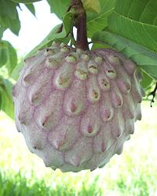

SAFARI
Users
General & History
Fruit producing members of the Annonaceae family all originated in the Americas. The tropical species were quickly distributed all over the tropical world by explorers and traders in the 16th century because the seeds are large, reasonably long lived and the fruit is highly desirable.
The seeds, bark and leaves are toxic but have a number of medicinal uses and are used as natural insecticides.
Varieties
Not every Annonaceae that bares edible fruit is listed here, but these are the ones commercially exploited over a wide area. There are others used locally in Central and South America.
Atymoya
[Annona cherimola x squamosa]
The Atymoya, a deliberate cross between a Cherimoya and a Sweetsop, is
considered one of the best eating Annonas. It is currently grown mostly in
Florida where it was developed but has been found suitable to coastal
areas of Southern California so may become more common here.
Photo (by a-giâu), distributed under the
GNU Free Document License v1.2 or later.
Calabash Nutmeg
[Jamaican Nutmeg; African Nutmeg; Ehu, Ehuru (Igbo); Ariwo (Yoruba); Iwo (Erhe); Awerewa, Ehiri, Airama, Muscadier de Calabash, Lubushi; Monodora myristica]
This member of the Custard Apple family is native to evergreen forests
of West Africa from Liberia, south to Angola and east to Uganda. It
is also now grown in the Caribbean, particularly Jamaica, and is present
in Central and South America. It produces large spherical fruit up to
nearly 8 inches diameter. Embedded in the aromatic pulp are up to 120
plump seeds up to 1.0 inches long. These are shelled and the interior
dried and ground for use in the same ways as nutmeg. They are also used
medicinally.
Details and Cooking.
Cherimoya
[Annona cherimola]
Believed to have originated in the valleys of northwestern South America, the cherimoya has been grown in California since 1871. The heart shaped fruit generally weigh between 6 ounces and 1 pound but can get up to 5 pounds. The photo specimen was 3-1/4 inches across and weighed 1/2 pound. The skin is thin and may be covered with fingerprint like indentations as in the photo (most common), or may have protrubances like the Atymoya pictured here. The flesh is white, creamy, fragrant and with just a touch of tartness. It's best just eaten out of the skin with a spoon, dealing with the many seeds as you encounter them. The seeds are quite toxic but so hard they cause no harm if accidentally swallowed.
Buying: Buy fruit that is firm, unblemished and heavy for it's
size. Set it on a counter out of the sunlight and let it ripen until it
has some give like an almost ripe avocado. Give it one more day after
that and then store in the refrigerator for up to 4 days if you aren't
going to eat it right then and there. If left out to get overripe it
will begin to ferment.
Custard Apple
[Annona reticulata]
Thought to have originated in the West Indies, the custard apple was
transported all around the world by traders in the 16th century. Requiring
a moist tropical climate it can not be grown in California and is a bit
marginal even in Florida. Custard apple fruit is pleasant tasting but
considered inferior to the Cherimoya and Sweetsop. In India it is eaten only
by the lower classes but is not class sensitive in the rest of the world. It
is often pressed through a sieve and added to ice cream and milk shakes or
blended with other fruit such as bananas.
Photo California Department of Food and Agriculture, copyright
expired.
Llama
 [Annona diversifolia alt A. macroprophyllata]
This tree is native to the west coast of Central America, but a few
are grown in Florida. The fruit, which can be nearly 6 inches diameter
and weight up to 2 pounds, is slightly elongated and studded with
shallow triangular protrubences. The rind may be pale green to pink or
purple and covered with a velvety light gray bloom. The fruit is variable
from juicy to rather dry with slightly tart flesh which will be
white in green fruit to rose in pink or purple fruit. Yield is uncertain
so it's unlikely to become commercially exploited to any great degree.
Photo by I LikE plants! distributed under license Creative
Commons
Attribution-ShareAlike v2.0 Generic.
Pawpaw
[Prairie Banana, Kentucky Banana, Ozark Banana; Asimina triloba]
A temperate zone tree native to the Southeast USA. The thin skinned
fruit, yellow to brownish when ripe, is smooth and shaped roughly like a
plump mango, 3 to 6 inches long and weighing up to a pound. The flesh is
creamy and ranges in flavor between banana and mango depending on
cultivar. Paw Paw is not yet a commercial crop but is being developed as
one with some success - uncertain pollination is a problem. Growers
sometimes resort to hanging rotting chicken necks in the orchards to
attract the blow flies and carrion beetles this plant depends on for
pollination. Shipping is another problem so the fruits are often pulped
and the pulp frozen for shipment. Note: In Australia the name
"Pawpaw" is used for mangos.
Photo U.S. Department of Agriculture - public domain
Pond Apple
[Alligator apple, Monkey apple; Annona glabra]
Pond Apple is native to the West Indies and grows wild all over the
Caribbean area and prolifically in the Florida Everglades. Unfortunately
it isn't considered as good eating as other Annonas and the yellow
flesh is said to be narcotic. The smooth skinned oblong fruits, between
3 and 6 inches long, are eaten fresh locally and made into jam and wine
but this fruit is not exploited commercially. Pond apple is often used
for root stock on which to grow other species because the roots are
extremely tolerant of flooding. Pond apple root stock imported for
grafting has escaped and become perhaps the worst invasive pest plant
in northern Australia. Meanwhile they're trying to restore pond apple
habitat in Florida.
Photo by CiXeL at
en.wikipedia
distributed under license Creative Commons
Attribution-ShareAlike v3.0 Unported attribution required.
Soursop
[Guanabana (Spanish); Graviola (Brazil); Annona muricata]
Native to the West Indies, soursop is now the most grown Annona throughout the tropics. The fruits are relatively large, up to 12 inches long and 6 inches in diameter, thin skinned and covered with tiny spines which rub off easily. The larger photo specimen was 6 inches long, 3-3/4 inches diameter and weighed 6-3/4 ounces.
Most soursop is processed into ice cream, sherbets and beverages. The
flesh is a trace fibrous and there are a lot of seeds, but the flavor is
intensely floral and quite enjoyable. It has been described as like
Strawberry and Pineapple with notes of Citrus and Coconut or Banana.
The fruit has a sweet-sour balance similar to Tamarind.
Details and Cooking
Sweetsop
[Sugar Apple, Anon; Annona squamosa]
The Sugar Apple is the most widely grown Annona species. It's origin is
uncertain but possibly around the Caribbean basin. It was carried
worldwide by traders in the 16th century. Requiring a wet tropical or near
tropical environment. sweetsop is not grown in California due to cold
winters but a few are grown in Florida. The fruit is generally just broken
apart into segments and the creamy flesh stripped from the seeds in the
mouth. The seeds are quite toxic but are so hard they will cause no harm
if accidentally swallowed. The photo specimen, from an Asian market in
Los Angeles and mislabeled custard apple, was previously frozen.
Marolo
[Araticum do cerrado; Annona crassiflora]
This fruit grows wild in the tropical savanna of Brazil and Paraguay and
is eaten by native peoples. While not yet cultivated, it is receiving
increased interest from the food industry for inclusion, in the form of
flour, in snack bars. It is sweet and high in vitamin C, minerals,
antioxidants and dietary fiber.
Photo by Etore.Santos distributed under license Creative Commons
Attribution-ShareAlike v3.0 Unported attribution required.
Selim Pepper
 [Grains of Selim, Senegal pepper, Kimba pepper, African pepper,
Moor pepper, Negro pepper, Kani pepper, Kili pepper, Ethiopian pepper;
Djar (Wolof, Senegal); Poivre de Sénégal (French);
Kieng (Cameroon); Hwentea (Ga - Ghana); Chimba (North Ghana);
Xylopia aethiopica | Xylopia striata
similar but larger - both of family Annonaceae]
[Grains of Selim, Senegal pepper, Kimba pepper, African pepper,
Moor pepper, Negro pepper, Kani pepper, Kili pepper, Ethiopian pepper;
Djar (Wolof, Senegal); Poivre de Sénégal (French);
Kieng (Cameroon); Hwentea (Ga - Ghana); Chimba (North Ghana);
Xylopia aethiopica | Xylopia striata
similar but larger - both of family Annonaceae]
This spice is totally unrelated to the Pepper Family (Piperaceae) or
even the Pepper Order (Piperales). It is used for similar
purposes as those peppers, but is much more aromatic. It is native to
much of Sub-Saharan Africa, from Senegal across to Ethiopia, and as
far south as Tanzania, with Ghana the largest producer. It is thought
to have originated in Ethiopia, but is particularly important in
Senegal on the coast of West Africa.
Details and Cooking.